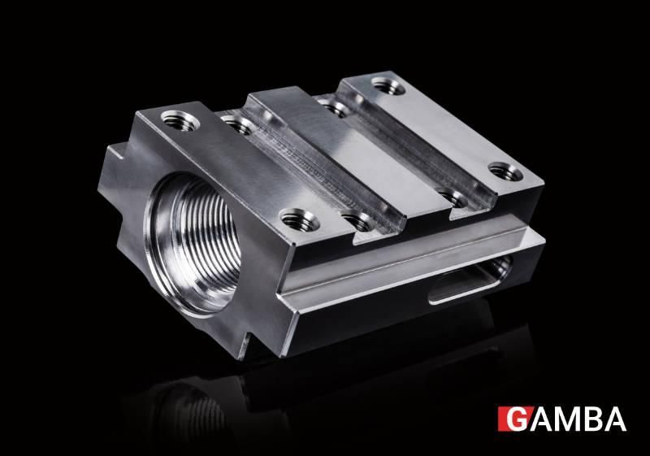
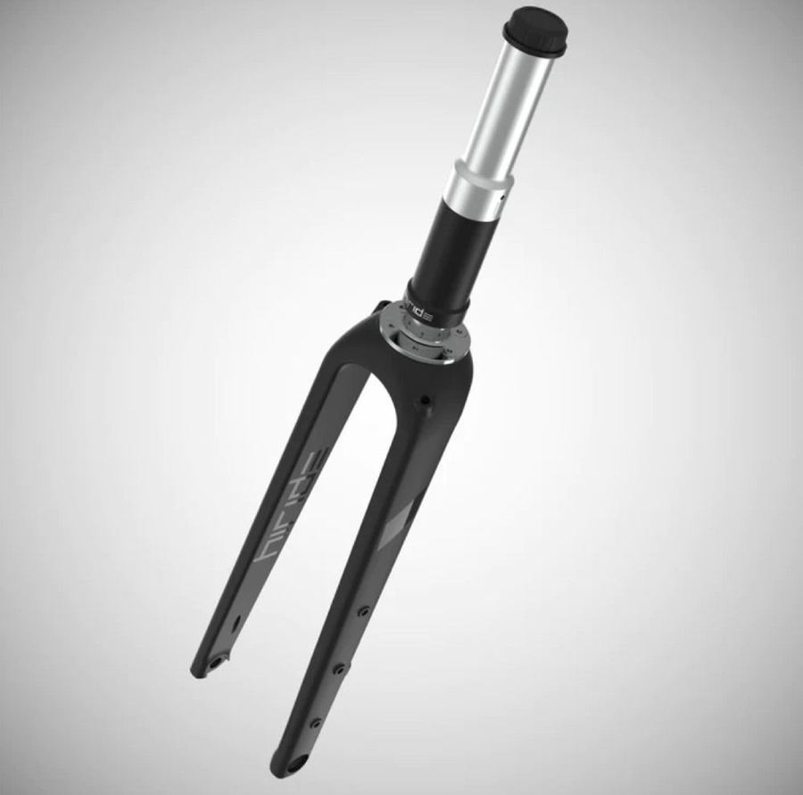
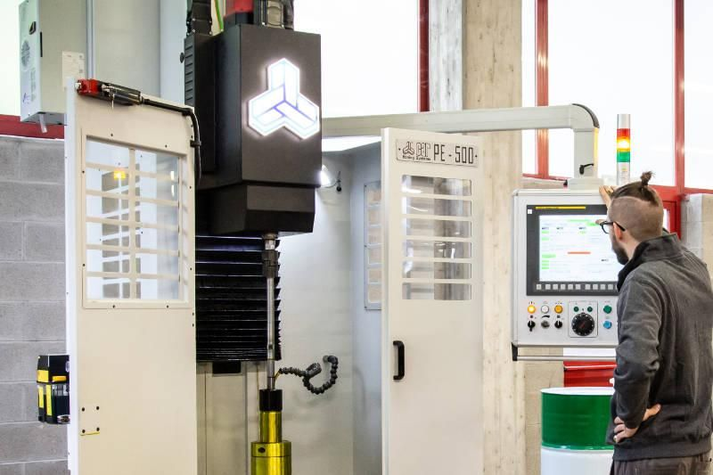
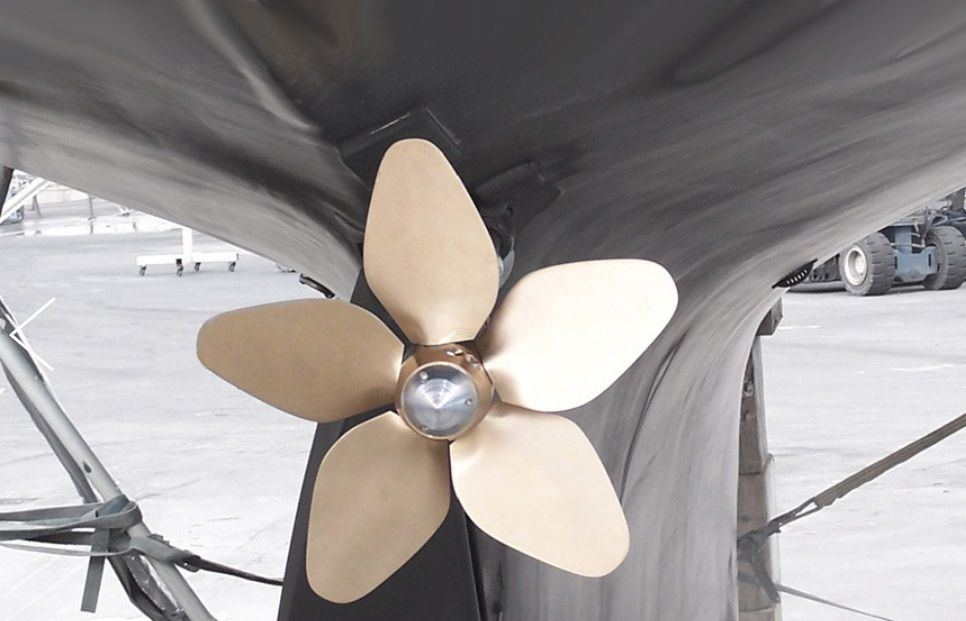

Avevamo bisogno di un partner adeguato per i componenti torniti e fresati della nuova morsa IMG. Abbiamo scelto Gamba, con cui collaboriamo da tanti anni.
Lorenzo Bergantin, direttore generale OML Autoblok
Le slitte in 42CrMo4 si fanno in un'unica ripresa su un centro a 5 assi, senza rettificare i piani di scorrimento.

La nuova sospensione frontale di Hiride è un grande successo nel mondo per bici gravel. La collaborazione con Gamba è stata determinante.
Giulio Ferretti, direttore generale Hiride
Particolari torniti, fresati, rettificati e lappati, con tolleranze strette e basse rugosità.

Abbiamo apprezzato che Gamba abbia acquistato una lappatrice dedicata ai nostri cilindri, per lappare il foro interno fino alla rugosità che ci serviva.
Angelo Rota, responsabile UT waterjet CMS
Pompanti per il taglio a getto d'acqua, con pressioni oltre i 4000 bar.

Negli anni abbiamo sviluppato un rapporto sempre più stretto con Gamba: sono veloci e amano la qualità come noi.
Max Bianchi, fondatore Max Prop
Ogive in bronzo alluminio ricavate dal pieno per le eliche Boomerang.